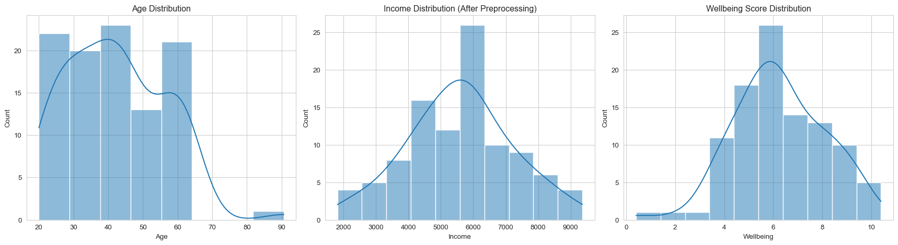

Pandas DataFrame은 파이썬에서 표 형태의 데이터를 다루는 데 필수적인 자료 구조입니다. 이 절에서는 DataFrame 생성, 정보 확인, 인덱싱, 슬라이싱, 데이터 조작 등 기본적인 사용법을 학습합니다.
2.1 2.1 파이썬을 이용한 데이터 핸들링 및 탐색: Pandas DataFrame 기초
사회과학 연구에서 데이터를 수집하고 분석하는 과정은 종종 복잡하고 방대한 양의 데이터를 다루는 것을 포함합니다. 파이썬의 Pandas 라이브러리는 이러한 데이터를 효율적으로 처리하고 분석하는 데 필수적인 도구입니다. 본 절에서는 Pandas의 핵심 자료 구조인 DataFrame을 중심으로, 데이터 핸들링 및 탐색의 기초를 다룹니다.
(시각 자료 예시: Pandas DataFrame의 구조를 보여주는 그림. 행과 열, 열 이름, 인덱스 등을 명확하게 표시한 표 형태의 그림)
2.1.1 2.1.1 Pandas DataFrame의 개념
Pandas DataFrame은 2차원 테이블 형태의 데이터 구조로서, 행(Row)과 열(Column)로 구성됩니다. 각 열은 서로 다른 데이터 유형(숫자, 문자열, 날짜 등)을 가질 수 있으며, 스프레드시트나 SQL 테이블과 유사한 구조를 갖습니다.
DataFrame은 다음과 같은 특징을 가집니다.
다양한 데이터 유형 처리: 각 열은 서로 다른 데이터 유형을 가질 수 있습니다.
레이블 기반 인덱싱: 행과 열에 레이블(이름)을 사용하여 데이터에 접근할 수 있습니다.
결측치 처리: 결측치(Missing Data)를 효율적으로 처리하는 기능을 제공합니다.
데이터 조작 기능: 데이터 필터링, 정렬, 그룹화, 병합 등 다양한 데이터 조작 기능을 제공합니다.
2.1.2 2.1.2 DataFrame 생성
DataFrame은 다양한 방법으로 생성할 수 있습니다.
(시각 자료 예시: DataFrame 생성 방법을 보여주는 그림. 리스트, 딕셔너리, CSV 파일 등 다양한 입력 소스로부터 DataFrame을 생성하는 과정을 간략하게 보여주는 그림)
수치형 열에 대한 기술 통계량(평균, 표준편차, 최소값, 최대값, 사분위수 등)을 요약하여 표시합니다.
print(df.describe())
Age
count 3.000000
mean 27.666667
std 2.516611
min 25.000000
25% 26.500000
50% 28.000000
75% 29.000000
max 30.000000
확인 함수
설명
예시
head()
DataFrame의 처음 몇 행 표시
df.head()
info()
DataFrame의 구조, 데이터 유형, 결측치 정보 확인
df.info()
describe()
수치형 열의 기술 통계량 요약
df.describe()
2.1.4 2.1.4 DataFrame 인덱싱 및 슬라이싱
DataFrame에서 특정 데이터에 접근하거나, 특정 행 또는 열을 선택하는 것을 인덱싱(Indexing) 및 슬라이싱(Slicing)이라고 합니다.
(시각 자료 예시: DataFrame 인덱싱 및 슬라이싱 방법을 보여주는 그림. [], loc[], iloc[] 등을 사용하여 특정 데이터에 접근하거나, 행/열을 선택하는 과정을 간략하게 보여주는 그림)
[] 연산자:
열 이름을 사용하여 열을 선택합니다.
print(df['Name']) # 'Name' 열 선택print(df[['Name', 'Age']]) # 'Name'과 'Age' 열 선택
0 Alice
1 Bob
2 Charlie
Name: Name, dtype: object
Name Age
0 Alice 25
1 Bob 30
2 Charlie 28
loc[] 메서드:
행과 열의 레이블을 사용하여 데이터에 접근합니다.
print(df.loc[0]) # 0번 행 선택print(df.loc[0:2, 'Name']) # 0번부터 2번 행까지, 'Name' 열 선택print(df.loc[:, ['Name', 'Age']]) # 모든 행, 'Name'과 'Age' 열 선택
Name Alice
Age 25
Gender Female
Name: 0, dtype: object
0 Alice
1 Bob
2 Charlie
Name: Name, dtype: object
Name Age
0 Alice 25
1 Bob 30
2 Charlie 28
iloc[] 메서드:
행과 열의 정수 인덱스를 사용하여 데이터에 접근합니다.
print(df.iloc[0]) # 0번 행 선택print(df.iloc[0:2, 0]) # 0번부터 2번 행까지, 0번 열 선택print(df.iloc[:, [0, 1]]) # 모든 행, 0번과 1번 열 선택
Name Alice
Age 25
Gender Female
Name: 0, dtype: object
0 Alice
1 Bob
Name: Name, dtype: object
Name Age
0 Alice 25
1 Bob 30
2 Charlie 28
인덱싱/슬라이싱 방법
설명
예시
[]
열 이름으로 열 선택
df['Name']
loc[]
행/열 레이블로 데이터 접근
df.loc[0:2, 'Name']
iloc[]
행/열 정수 인덱스로 데이터 접근
df.iloc[:, [0, 1]]
2.1.5 2.1.5 DataFrame 데이터 조작
DataFrame은 다양한 데이터 조작 기능을 제공합니다.
(시각 자료 예시: DataFrame 데이터 조작 방법을 보여주는 그림. 새로운 열 추가, 열 삭제, 데이터 필터링, 정렬 등을 수행하는 과정을 간략하게 보여주는 그림)
새로운 열 추가:
df['Salary'] = [50000, 60000, 55000] # 'Salary' 열 추가 df['Age_Plus_10'] = df['Age'] +10# 'Age' 열을 이용하여 'Age_Plus_10' 열 추가
데이터 필터링:
df_filtered = df[df['Age'] >28] # 'Age' 열이 28보다 큰 행만 선택 df_filtered = df[(df['Age'] >25) & (df['Gender'] =='Male')] # 'Age' 열이 25보다 크고 'Gender' 열이 'Male'인 행만 선택
데이터 정렬:
df_sorted = df.sort_values(by='Age', ascending=True) # 'Age' 열을 기준으로 오름차순 정렬 df_sorted = df.sort_values(by=['Gender', 'Age'], ascending=[True, False]) # 'Gender' 열을 기준으로 오름차순 정렬 후, 'Age' 열을 기준으로 내림차순 정렬
조작 방법
설명
예시
새로운 열 추가
DataFrame에 새로운 열 추가
df['Salary'] = [50000, 60000, 55000]
열 삭제
DataFrame에서 열 삭제
df = df.drop(columns=['Gender'])
데이터 필터링
특정 조건을 만족하는 행만 선택
df[df['Age'] > 28]
데이터 정렬
DataFrame의 행을 특정 열을 기준으로 정렬
df.sort_values(by='Age')
열 삭제:
df = df.drop(columns=['Gender']) # 'Gender' 열 삭제
2.1.6 2.1.6 DataFrame 활용의 중요성
Pandas DataFrame은 사회과학 연구 데이터를 효율적으로 관리하고 분석하는 데 필수적인 도구입니다. DataFrame을 통해 데이터를 구조화하고, 다양한 데이터 조작 기능을 활용함으로써, 연구자는 데이터 분석 과정을 체계적으로 수행하고, 연구 결과의 신뢰성을 높일 수 있습니다.
2.2 2.2 파이썬을 이용한 데이터 핸들링 및 탐색: 데이터 전처리
사회과학 연구에서 수집된 데이터는 종종 결측치, 이상치, 불일치 등 다양한 문제점을 포함하고 있습니다. 이러한 데이터 문제를 해결하고 분석에 적합한 형태로 데이터를 변환하는 과정을 데이터 전처리(Data Preprocessing)라고 합니다. 본 절에서는 파이썬 Pandas 라이브러리를 이용하여 데이터 전처리를 수행하는 주요 방법에 대해 설명합니다.
(시각 자료 예시: 데이터 전처리 과정을 보여주는 흐름도. 결측치 처리, 이상치 처리, 변수 변환 등의 단계를 포함하는 그림)
2.2.1 2.2.1 결측치 처리
결측치(Missing Data)는 데이터에 값이 존재하지 않는 경우를 의미합니다. 결측치는 데이터 분석 결과의 왜곡을 초래할 수 있으므로, 적절한 방법으로 처리해야 합니다.
(시각 자료 예시: 결측치 처리 방법을 비교하는 표. 삭제, 대체, 예측 등 다양한 방법의 장단점을 비교하는 표)
결측치 확인:
isnull() 또는 isna() 함수를 사용하여 결측치를 확인할 수 있습니다.
sum() 함수와 함께 사용하여 결측치의 개수를 확인할 수 있습니다.
import pandas as pd# 예시 DataFrame 생성 data = {'A': [1, 2, None, 4, 5], 'B': [6, None, 8, 9, 10], 'C': ['a', 'b', 'c', None, 'e']} df = pd.DataFrame(data)print(df.isnull())print(df.isnull().sum())
A B C
0 False False False
1 False True False
2 True False False
3 False False True
4 False False False
A 1
B 1
C 1
dtype: int64
* **결측치 삭제:**
* `dropna()` 함수를 사용하여 결측치를 포함하는 행 또는 열을 삭제할 수 있습니다.
* `axis` 매개변수를 사용하여 행(0) 또는 열(1) 삭제를 지정할 수 있습니다.
* `how` 매개변수를 사용하여 모든 값이 결측치인 경우(`'all'`) 또는 하나라도 결측치가 있는 경우(`'any'`)를 지정할 수 있습니다.
A B C
0 1.0 6.0 a
4 5.0 10.0 e
Empty DataFrame
Columns: []
Index: [0, 1, 2, 3, 4]
A B C
0 1.0 6.0 a
1 2.0 NaN b
2 NaN 8.0 c
3 4.0 9.0 None
4 5.0 10.0 e
* **결측치 대체:**
* `fillna()` 함수를 사용하여 결측치를 특정 값으로 대체할 수 있습니다.
* `value` 매개변수를 사용하여 대체할 값을 지정할 수 있습니다.
* `method` 매개변수를 사용하여 이전 값(`'ffill'`) 또는 다음 값(`'bfill'`)으로 대체할 수 있습니다.
* `mean()`, `median()`, `mode()` 등 통계 함수를 사용하여 대체값을 계산할 수 있습니다.
A B C
0 1.0 6.0 a
1 2.0 0.0 b
2 0.0 8.0 c
3 4.0 9.0 0
4 5.0 10.0 e
A B C
0 1.0 6.00 a
1 2.0 8.25 b
2 3.0 8.00 c
3 4.0 9.00 None
4 5.0 10.00 e
A B C
0 1.0 6.0 a
1 2.0 6.0 b
2 2.0 8.0 c
3 4.0 9.0 c
4 5.0 10.0 e
C:\Users\voidm\AppData\Local\Temp\ipykernel_35740\912558651.py:3: FutureWarning:
DataFrame.fillna with 'method' is deprecated and will raise in a future version. Use obj.ffill() or obj.bfill() instead.
| 처리 방법 | 설명 | 예시 |
| :-----------: | :--------------------------------------------: | :------------------------------------------------: |
| 결측치 확인 | `isnull()`, `isna()` | `df.isnull()` |
| 결측치 삭제 | `dropna()` | `df.dropna()` |
| 결측치 대체 | `fillna()` | `df.fillna(0)` |
2.2.2 2.2.2 이상치 처리
이상치(Outlier)는 다른 데이터와 확연히 구분되는 극단적인 값을 의미합니다. 이상치는 데이터 분석 결과의 왜곡을 초래할 수 있으므로, 탐지하고 적절하게 처리해야 합니다.
(시각 자료 예시: 이상치 탐지 방법을 보여주는 그림. 상자 그림, 산점도 등을 사용하여 이상치를 시각적으로 탐지하는 그림)
이상치 탐지:
시각적 방법: 상자 그림(boxplot()), 산점도(scatter()) 등을 사용하여 이상치를 시각적으로 탐지할 수 있습니다.
import matplotlib.pyplot as pltimport seaborn as sns sns.boxplot(x=df['B']) plt.show() sns.scatterplot(x=df.index, y=df['B']) plt.show()
* **통계적 방법:** Z-점수, 사분위 범위(Interquartile Range, IQR) 등을 사용하여 이상치를 탐지할 수 있습니다.
* **이상치 처리:**
* **삭제:** 이상치를 포함하는 행 또는 열을 삭제합니다.
* **대체:** 이상치를 특정 값(평균, 중앙값, 최빈값 등)으로 대체하거나, 상한/하한 값으로 제한합니다.
* **변환:** 로그 변환, 제곱근 변환 등을 통해 이상치의 영향을 줄입니다.
B B_scaled
0 6.0 0.00
1 NaN NaN
2 8.0 0.50
3 9.0 0.75
4 10.0 1.00
* **분포 변환(Distribution Transformation):**
* 변수의 분포를 변경하여 특정 분석 방법에 적합하도록 만듭니다.
* **로그 변환(Log Transformation):** 오른쪽으로 꼬리가 긴 분포(Right-Skewed Distribution)를 정규 분포에 가깝게 만듭니다.
import numpy as np df_log = df.copy() df_log['A_log'] = np.log(df_log['A'][df_log['A'] >0]) # 0 또는 음수 값을 제외하고 로그 변환print(df_log[['A', 'A_log']].head())
A A_log
0 1.0 0.000000
1 2.0 0.693147
2 NaN NaN
3 4.0 1.386294
4 5.0 1.609438
* **제곱근 변환(Square Root Transformation):** 로그 변환과 유사한 효과를 가지며, 0을 포함하는 데이터에 적용할 수 있습니다.
df_sqrt = df.copy() df_sqrt['B_sqrt'] = np.sqrt(df_sqrt['B'][df_sqrt['B'] >=0]) # 음수 값을 제외하고 제곱근 변환print(df_sqrt[['B', 'B_sqrt']].head())
B B_sqrt
0 6.0 2.449490
1 NaN NaN
2 8.0 2.828427
3 9.0 3.000000
4 10.0 3.162278
* **범주형 변수 처리:**
* 범주형 변수를 분석에 활용하기 위해 수치형 변수로 변환합니다.
* **더미 변수화(Dummy Variable Encoding):** 각 범주를 0 또는 1로 표현하는 새로운 변수를 생성합니다.
df_encoded = pd.get_dummies(df, columns=['C'], drop_first=True) # 'C' 열을 더미 변수화 (첫 번째 범주 제외)print(df_encoded.head())
A B A_scaled B_scaled C_b C_c C_e
0 1.0 6.0 -1.264911 0.00 False False False
1 2.0 NaN -0.632456 NaN True False False
2 NaN 8.0 NaN 0.50 False True False
3 4.0 9.0 0.632456 0.75 False False False
4 5.0 10.0 1.264911 1.00 False False True
* **원-핫 인코딩(One-Hot Encoding):** 더미 변수화와 유사하지만, 첫 번째 범주를 제외하지 않습니다.
df_onehot = pd.get_dummies(df, columns=['C']) # 'C' 열을 원-핫 인코딩print(df_onehot.head())
A B A_scaled B_scaled C_a C_b C_c C_e
0 1.0 6.0 -1.264911 0.00 True False False False
1 2.0 NaN -0.632456 NaN False True False False
2 NaN 8.0 NaN 0.50 False False True False
3 4.0 9.0 0.632456 0.75 False False False False
4 5.0 10.0 1.264911 1.00 False False False True
| 변환 방법 | 설명 | 예시 |
| :-----------: | :--------------------------------------------: | :------------------------------------------------: |
| 척도 변환 | 변수의 척도를 변경 | 표준화, 정규화 |
| 분포 변환 | 변수의 분포를 변경 | 로그 변환, 제곱근 변환 |
| 범주형 변수 처리 | 범주형 변수를 수치형으로 변환 | 더미 변수화, 원-핫 인코딩 |
2.2.4 2.2.4 데이터 전처리 과정의 중요성
데이터 전처리는 데이터 분석의 정확성과 신뢰성을 높이는 데 필수적인 과정입니다. 적절한 전처리 과정을 통해 데이터의 품질을 향상시키고, 분석에 적합한 형태로 데이터를 변환함으로써, 연구자는 더욱 정확하고 의미 있는 결과를 얻을 수 있습니다.
2.3 2.3 기술 통계 분석
데이터 전처리를 통해 데이터를 분석에 적합한 형태로 정제했다면, 다음 단계는 데이터의 기본적인 특성을 파악하는 것입니다. 기술 통계 분석(Descriptive Statistics Analysis)은 수집된 데이터를 요약하고 설명하여 데이터가 가진 정보를 효과적으로 전달하는 통계적 방법입니다. 이는 데이터의 중심 경향성(Central Tendency), 산포도(Dispersion), 분포 형태(Distribution Shape) 등을 파악하여 데이터에 대한 깊이 있는 이해를 돕고, 이어질 추론 통계 분석의 기초를 마련합니다.
본 절에서는 파이썬 Pandas 라이브러리를 활용하여 주요 기술 통계량을 계산하고 해석하는 방법을 학습합니다.
📌 핵심 요약
기술 통계 분석은 데이터의 기본적인 특성을 요약하고 설명하는 과정입니다. Pandas를 이용하여 평균, 중앙값, 최빈값 등 중심 경향성 지표와 분산, 표준편차, 범위, 사분위수 등 산포도 지표를 계산하고 해석하는 방법을 배웁니다. 또한, 범주형 데이터의 빈도 분석 방법과 .describe() 함수를 활용한 요약 통계량 확인 방법을 익힙니다.
(시각 자료 예시: 기술 통계 분석의 주요 목표(중심 경향성, 산포도, 분포 형태 파악)를 보여주는 다이어그램)
2.3.1 가상 데이터 생성
기술 통계 분석 실습을 위해 가상의 설문조사 응답 데이터를 담은 Pandas DataFrame을 생성해 보겠습니다. 이 데이터는 ‘ID’, ‘Age’, ‘Gender’, ‘EducationLevel’, ‘SatisfactionScore’, ‘Income’ 열을 포함합니다.
import pandas as pdimport numpy as np# 가상 데이터 생성data = {'ID': range(1, 11),'Age': [25, 30, 28, 35, 42, 29, 31, 45, 22, 38],'Gender': ['Female', 'Male', 'Male', 'Female', 'Male', 'Female', 'Male', 'Female', 'Female', 'Male'],'EducationLevel': ['Bachelor', 'Master', 'Bachelor', 'PhD', 'Master', 'Bachelor', 'Master', 'PhD', 'High School', 'Master'],'SatisfactionScore': [7, 8, 6, 9, 7, np.nan, 8, 10, 5, 7], # 결측치(NaN) 포함'Income': [5000, 6000, 5500, 7500, 8000, 5200, 6100, 9000, 4000, 7000]}df_survey = pd.DataFrame(data)print("가상 설문조사 데이터:")print(df_survey.head()) # 데이터 일부 확인print("\n데이터 정보 요약:")print(df_survey.info()) # 데이터 구조 및 결측치 확인
가상 설문조사 데이터:
ID Age Gender EducationLevel SatisfactionScore Income
0 1 25 Female Bachelor 7.0 5000
1 2 30 Male Master 8.0 6000
2 3 28 Male Bachelor 6.0 5500
3 4 35 Female PhD 9.0 7500
4 5 42 Male Master 7.0 8000
데이터 정보 요약:
<class 'pandas.core.frame.DataFrame'>
RangeIndex: 10 entries, 0 to 9
Data columns (total 6 columns):
# Column Non-Null Count Dtype
--- ------ -------------- -----
0 ID 10 non-null int64
1 Age 10 non-null int64
2 Gender 10 non-null object
3 EducationLevel 10 non-null object
4 SatisfactionScore 9 non-null float64
5 Income 10 non-null int64
dtypes: float64(1), int64(3), object(2)
memory usage: 612.0+ bytes
None
참고: Pandas의 대부분 기술 통계 함수는 기본적으로 결측치(NaN)를 제외하고 계산합니다. 이는 skipna=True (기본값) 설정 때문입니다.
2.3.2 2.3.1 중심 경향성 측정 (Measures of Central Tendency)
데이터의 중심 경향성은 데이터 값들이 어떤 값을 중심으로 분포하는 경향이 있는지를 나타내는 척도입니다. 대표적인 중심 경향성 측정 지표로는 평균, 중앙값, 최빈값이 있습니다.
(시각 자료 예시: 정규분포 곡선 위에 평균, 중앙값, 최빈값이 일치하는 모습을 보여주고, 비대칭 분포(skewed distribution)에서 세 값이 달라지는 모습을 비교하는 그림)
평균 (Mean):
모든 데이터 값을 더한 후 데이터 개수로 나눈 값입니다.
데이터 전체의 값을 반영하지만, 극단적인 값(이상치)에 영향을 받기 쉽습니다.
Pandas에서는 .mean() 메서드를 사용합니다.
# Age와 Income 열의 평균 계산 mean_age = df_survey['Age'].mean() mean_income = df_survey['Income'].mean() mean_satisfaction = df_survey['SatisfactionScore'].mean() # NaN은 자동 제외print(f"평균 나이: {mean_age:.2f}")print(f"평균 소득: {mean_income:.2f}")print(f"평균 만족도 점수: {mean_satisfaction:.2f}")
평균 나이: 32.50
평균 소득: 6330.00
평균 만족도 점수: 7.44
중앙값 (Median):
데이터를 크기 순서대로 정렬했을 때 중앙에 위치하는 값입니다.
데이터 개수가 짝수일 경우, 중앙에 위치한 두 값의 평균을 사용합니다.
평균과 달리 극단적인 값(이상치)에 영향을 덜 받습니다 (Robust).
Pandas에서는 .median() 메서드를 사용합니다.
# Age와 Income 열의 중앙값 계산 median_age = df_survey['Age'].median() median_income = df_survey['Income'].median() median_satisfaction = df_survey['SatisfactionScore'].median() # NaN은 자동 제외print(f"나이 중앙값: {median_age}")print(f"소득 중앙값: {median_income}")print(f"만족도 점수 중앙값: {median_satisfaction}")# 평균과 중앙값 비교 (소득 분포가 비대칭적일 경우 차이가 발생할 수 있음)print(f"\n소득 - 평균: {mean_income:.2f}, 중앙값: {median_income}")
성별 비율:
Gender
Female 0.5
Male 0.5
Name: proportion, dtype: float64
학력 비율:
EducationLevel
Master 0.4
Bachelor 0.3
PhD 0.2
High School 0.1
Name: proportion, dtype: float64
학력 백분율:
EducationLevel
Master 40.0%
Bachelor 30.0%
PhD 20.0%
High School 10.0%
Name: proportion, dtype: object
분석 방법
설명
Pandas 메서드
빈도표 (Frequency)
각 범주의 개수
.value_counts()
비율 (Proportion)
각 범주의 비율 (전체 대비)
.value_counts(normalize=True)
2.3.6 2.3.5 모든 변수 요약: .describe() 메서드 활용
Pandas의 .describe() 메서드는 DataFrame의 수치형 변수에 대한 주요 기술 통계량(개수, 평균, 표준편차, 최소값, 사분위수, 최댓값)을 한 번에 계산하여 보여줍니다. 이는 데이터 탐색 초기 단계에서 매우 유용합니다.
# 수치형 변수에 대한 기술 통계 요약numeric_summary = df_survey.describe()print("수치형 변수 요약 통계:")print(numeric_summary)
수치형 변수 요약 통계:
ID Age SatisfactionScore Income
count 10.00000 10.000000 9.000000 10.000000
mean 5.50000 32.500000 7.444444 6330.000000
std 3.02765 7.382412 1.509231 1529.742171
min 1.00000 22.000000 5.000000 4000.000000
25% 3.25000 28.250000 7.000000 5275.000000
50% 5.50000 30.500000 7.000000 6050.000000
75% 7.75000 37.250000 8.000000 7375.000000
max 10.00000 45.000000 10.000000 9000.000000
include='all' 옵션을 사용하면 수치형 변수뿐만 아니라 범주형 변수에 대한 요약 정보(개수, 고유값 개수, 최빈값, 최빈값 빈도)도 함께 확인할 수 있습니다.
# 모든 변수에 대한 기술 통계 요약 (범주형 포함)all_summary = df_survey.describe(include='all')print("\n모든 변수 요약 통계:")print(all_summary)
모든 변수 요약 통계:
ID Age Gender EducationLevel SatisfactionScore \
count 10.00000 10.000000 10 10 9.000000
unique NaN NaN 2 4 NaN
top NaN NaN Female Master NaN
freq NaN NaN 5 4 NaN
mean 5.50000 32.500000 NaN NaN 7.444444
std 3.02765 7.382412 NaN NaN 1.509231
min 1.00000 22.000000 NaN NaN 5.000000
25% 3.25000 28.250000 NaN NaN 7.000000
50% 5.50000 30.500000 NaN NaN 7.000000
75% 7.75000 37.250000 NaN NaN 8.000000
max 10.00000 45.000000 NaN NaN 10.000000
Income
count 10.000000
unique NaN
top NaN
freq NaN
mean 6330.000000
std 1529.742171
min 4000.000000
25% 5275.000000
50% 6050.000000
75% 7375.000000
max 9000.000000
참고:.describe(include='all') 결과에서 수치형 변수의 ‘unique’, ‘top’, ‘freq’는 NaN으로 표시되고, 범주형 변수의 ’mean’, ‘std’, ‘min’, ‘25%’, ‘50%’, ‘75%’, ’max’는 NaN으로 표시됩니다. ’count’는 모든 변수 유형에 대해 유효한 값(non-null 개수)을 보여줍니다.
2.3.7 2.3.6 기술 통계 분석의 중요성
기술 통계 분석은 복잡한 데이터를 이해하기 쉬운 형태로 요약하고, 데이터의 숨겨진 패턴이나 특징을 발견하는 첫걸음입니다. 사회과학 연구에서 연구 가설을 설정하거나, 분석 방법을 선택하거나, 분석 결과를 해석하는 데 있어 데이터의 기본적인 특성을 파악하는 것은 필수적입니다. Pandas를 활용한 기술 통계 분석은 이러한 과정을 효율적이고 체계적으로 수행할 수 있도록 돕습니다. 다음 절에서는 이러한 데이터를 시각적으로 탐색하는 방법에 대해 알아보겠습니다.
2.4 2.4 데이터 시각화: Matplotlib와 Seaborn 활용
기술 통계 분석을 통해 데이터의 요약된 수치를 파악했다면, 데이터 시각화(Data Visualization)는 이러한 정보를 그래프 형태로 표현하여 데이터의 패턴, 추세, 관계, 이상치 등을 직관적으로 이해하도록 돕는 과정입니다. 사회과학 연구에서 시각화는 데이터를 탐색하는 강력한 도구일 뿐만 아니라, 연구 결과를 효과적으로 전달하는 데 필수적입니다.
본 절에서는 파이썬의 대표적인 시각화 라이브러리인 Matplotlib와 이를 기반으로 더 사용하기 쉽고 미려한 그래프를 제공하는 Seaborn을 활용하여 다양한 종류의 그래프를 생성하고 해석하는 방법을 학습합니다.
📌 핵심 요약
데이터 시각화는 데이터의 패턴과 관계를 직관적으로 파악하고 결과를 효과적으로 전달하는 데 중요합니다. Matplotlib와 Seaborn 라이브러리를 사용하여 히스토그램, KDE 플롯, 박스 플롯, 카운트 플롯(단일 변수 시각화), 산점도, 라인 플롯, 비교 박스 플롯/바이올린 플롯, 비교 막대 플롯(다변수 관계 시각화) 등을 그리는 방법을 배웁니다. 또한, Pair Plot과 Heatmap을 이용한 다변수 탐색 및 그래프 꾸미기 기초를 익힙니다.
2.4.1 시각화 라이브러리 준비
시각화를 위해 Matplotlib의 pyplot 모듈과 Seaborn 라이브러리를 임포트합니다. Seaborn의 스타일을 설정하면 더 보기 좋은 그래프를 쉽게 그릴 수 있습니다.
import matplotlib.pyplot as pltimport seaborn as snsimport pandas as pdimport numpy as np # 이전 섹션의 데이터 생성 코드 재실행 (혹은 저장된 데이터 로드)# 이전 섹션(2.3)에서 사용한 df_survey 데이터가 메모리에 없다면 재생성data = {'ID': range(1, 11),'Age': [25, 30, 28, 35, 42, 29, 31, 45, 22, 38],'Gender': ['Female', 'Male', 'Male', 'Female', 'Male', 'Female', 'Male', 'Female', 'Female', 'Male'],'EducationLevel': ['Bachelor', 'Master', 'Bachelor', 'PhD', 'Master', 'Bachelor', 'Master', 'PhD', 'High School', 'Master'],'SatisfactionScore': [7, 8, 6, 9, 7, np.nan, 8, 10, 5, 7], # 결측치(NaN) 포함'Income': [5000, 6000, 5500, 7500, 8000, 5200, 6100, 9000, 4000, 7000]}df_survey = pd.DataFrame(data)# Seaborn 스타일 설정 (예: 'whitegrid', 'darkgrid', 'ticks' 등)sns.set_style('whitegrid')# Matplotlib 한글 폰트 설정 (Windows/Mac/Linux 환경에 맞게 설정 필요)# 예시 (Windows - Malgun Gothic):# plt.rcParams['font.family'] = 'Malgun Gothic'# 예시 (Mac - AppleGothic):# plt.rcParams['font.family'] = 'AppleGothic'# plt.rcParams['axes.unicode_minus'] = False # 마이너스 부호 깨짐 방지# (참고) Jupyter Notebook 환경에서는 %matplotlib inline 매직 명령어로 그래프가 출력됨# 별도 환경에서는 plt.show()를 호출해야 그래프가 나타남
참고: 시스템에 따라 한글 폰트 설정이 필요할 수 있습니다. 사용 중인 운영체제에 맞는 폰트 이름을 plt.rcParams['font.family']에 지정해야 그래프의 제목이나 축 레이블에 한글이 깨지지 않고 표시됩니다.
2.4.2 2.4.1 단일 변수 시각화 (Univariate Visualization)
단일 변수 시각화는 개별 변수의 분포 특성(분포 형태, 중심 경향성, 산포도 등)을 파악하는 데 사용됩니다.
히스토그램 (Histogram):
연속형 변수의 분포를 시각화하는 가장 기본적인 방법입니다. 데이터 범위를 여러 구간(bin)으로 나누고 각 구간에 속하는 데이터의 빈도(frequency)를 막대로 나타냅니다.
Seaborn의 histplot() 또는 displot(kind='hist') 함수를 사용하면 편리합니다.
# Age 변수의 히스토그램plt.figure(figsize=(8, 5)) # 그래프 크기 조절sns.histplot(data=df_survey, x='Age', bins=5, kde=True) # kde=True는 밀도 곡선 추가plt.title('Age Distribution Histogram')plt.xlabel('Age')plt.ylabel('Frequency')plt.show()# Income 변수의 히스토그램plt.figure(figsize=(8, 5))sns.histplot(data=df_survey, x='Income', kde=True)plt.title('Income Distribution Histogram')plt.xlabel('Income')plt.ylabel('Frequency')plt.show()
* **해석:** 히스토그램을 통해 데이터가 어떤 값 범위에 집중되어 있는지, 분포가 대칭적인지, 치우쳐 있는지(왜도) 등을 시각적으로 확인할 수 있습니다. `bins` 개수에 따라 모양이 달라질 수 있으므로 적절한 값 설정이 중요합니다.
커널 밀도 추정 플롯 (Kernel Density Estimate Plot, KDE Plot):
히스토그램을 부드러운 곡선 형태로 나타낸 것으로, 변수의 확률 밀도 함수(Probability Density Function)를 추정하여 시각화합니다.
Seaborn의 kdeplot() 또는 displot(kind='kde') 함수를 사용합니다.
# Age 변수의 KDE 플롯plt.figure(figsize=(8, 5))sns.kdeplot(data=df_survey, x='Age', fill=True) # fill=True는 곡선 아래 영역 채우기plt.title('Age Distribution KDE Plot')plt.xlabel('Age')plt.ylabel('Density')plt.show()
* **해석:** KDE 플롯은 히스토그램보다 분포의 형태를 더 매끄럽게 보여주지만, `bins` 설정이 없는 대신 대역폭(bandwidth) 파라미터에 따라 곡선의 평활도(smoothness)가 달라질 수 있습니다.
박스 플롯 (Box Plot):
데이터의 사분위수(Q1, Q2/중앙값, Q3), 최소/최대값(IQR 기준), 이상치를 시각적으로 표현합니다. 데이터의 분포와 이상치 존재 여부를 빠르게 파악하는 데 유용합니다 (2.2.2절, 2.3.2절 참고).
Seaborn의 boxplot() 함수를 사용합니다.
# Income 변수의 박스 플롯plt.figure(figsize=(6, 6))sns.boxplot(data=df_survey, y='Income') # y축에 변수 지정 시 세로 박스 플롯plt.title('Income Distribution Box Plot')plt.ylabel('Income')plt.show()# SatisfactionScore 변수의 박스 플롯 (NaN 값은 자동으로 제외됨)plt.figure(figsize=(6, 6))sns.boxplot(data=df_survey, y='SatisfactionScore')plt.title('Satisfaction Score Distribution Box Plot')plt.ylabel('Satisfaction Score')plt.show()
* **해석:** 상자의 하단/상단 선은 각각 Q1/Q3, 상자 안의 선은 중앙값(Q2)을 나타냅니다. 상자 길이는 IQR입니다. 상자 밖의 선(whisker)은 보통 IQR의 1.5배 범위 내의 데이터를 나타내며, 그 밖의 점들은 이상치(outlier)로 간주됩니다.
C:\Users\voidm\AppData\Local\Temp\ipykernel_35740\3407003983.py:3: FutureWarning:
Passing `palette` without assigning `hue` is deprecated and will be removed in v0.14.0. Assign the `x` variable to `hue` and set `legend=False` for the same effect.
* **해석:** 각 막대의 길이는 해당 범주의 빈도를 나타냅니다. 범주별 상대적인 크기를 쉽게 비교할 수 있습니다.
2.4.3 2.4.2 이변량 시각화 (Bivariate Visualization)
이변량 시각화는 두 변수 간의 관계를 탐색하는 데 사용됩니다. 변수의 종류(연속형/범주형)에 따라 적합한 그래프 유형이 다릅니다.
산점도 (Scatter Plot):
두 연속형 변수 간의 관계를 시각화하는 데 가장 널리 사용됩니다. 각 데이터 포인트를 2차원 평면 위에 점으로 나타냅니다.
변수 간 선형 관계, 비선형 관계, 군집, 이상치 등을 파악할 수 있습니다.
Seaborn의 scatterplot() 또는 relplot(kind='scatter') 함수를 사용합니다.
# Age와 Income 간의 산점도plt.figure(figsize=(8, 6))sns.scatterplot(data=df_survey, x='Age', y='Income', hue='Gender', style='EducationLevel', s=100) # hue/style/size로 추가 변수 표현 가능plt.title('Scatter Plot of Age vs Income')plt.xlabel('Age')plt.ylabel('Income')plt.legend(bbox_to_anchor=(1.05, 1), loc='upper left') # 범례 위치 조정plt.tight_layout()plt.show()
* **해석:** 점들의 분포 패턴을 통해 두 변수 간의 관계 방향(양의 관계, 음의 관계)과 강도를 추측할 수 있습니다. `hue`, `style`, `size` 등의 옵션을 활용하면 추가적인 범주형 또는 연속형 변수의 정보를 함께 표현할 수 있습니다 (다변량 시각화의 기초).
라인 플롯 (Line Plot):
주로 시간의 흐름에 따른 연속형 변수의 변화 추세를 시각화하는 데 사용됩니다. (현재 df_survey 데이터는 시계열이 아니므로 예시는 생략하지만, 개념 설명)
x축이 순서(시간, 단계 등)를 나타내는 경우 유용합니다.
Seaborn의 lineplot() 또는 relplot(kind='line') 함수를 사용합니다.
사용 예시: 연도별 평균 소득 변화, 실험 단계별 반응 시간 변화 등.
비교 박스 플롯 / 바이올린 플롯 (Box Plot / Violin Plot for Comparison):
범주형 변수의 각 범주에 따른 연속형 변수의 분포를 비교할 때 유용합니다.
박스 플롯: 여러 그룹의 분포를 사분위수 기준으로 간결하게 비교합니다.
바이올린 플롯: 박스 플롯에 KDE(커널 밀도 추정)를 결합하여 분포의 형태까지 함께 보여줍니다.
Seaborn의 boxplot(), violinplot() 함수를 사용합니다.
# EducationLevel 별 Income 분포 비교 (박스 플롯)plt.figure(figsize=(10, 6))sns.boxplot(data=df_survey, x='EducationLevel', y='Income', order=['High School', 'Bachelor', 'Master', 'PhD']) # 순서 지정plt.title('Income Distribution by Education Level (Box Plot)')plt.xlabel('Education Level')plt.ylabel('Income')plt.xticks(rotation=15) # x축 레이블 회전plt.tight_layout()plt.show()# Gender 별 SatisfactionScore 분포 비교 (바이올린 플롯)plt.figure(figsize=(8, 6))sns.violinplot(data=df_survey.dropna(subset=['SatisfactionScore']), x='Gender', y='SatisfactionScore', inner='quartile') # inner='quartile'은 사분위수 표시plt.title('Satisfaction Score Distribution by Gender (Violin Plot)')plt.xlabel('Gender')plt.ylabel('Satisfaction Score')plt.show()
* **해석:** 그룹 간 중심 경향성(중앙값), 퍼짐 정도(IQR, 바이올린의 폭), 이상치 유무 등을 비교하여 집단 간 차이를 시각적으로 탐색할 수 있습니다.
비교 막대 플롯 (Bar Plot for Comparison):
범주형 변수의 각 범주에 따른 연속형 변수의 대표값(기본값: 평균)을 막대로 비교하여 시각화합니다. 막대 위의 선(오차 막대)은 보통 신뢰 구간(Confidence Interval)을 나타냅니다.
Seaborn의 barplot() 함수를 사용합니다. estimator 인자를 통해 평균 외 다른 통계량(중앙값 등)을 지정할 수 있습니다.
# EducationLevel 별 평균 Income 비교 (막대 플롯)plt.figure(figsize=(10, 6))# np.mean 대신 다른 estimator 사용 가능 (예: estimator=np.median)sns.barplot(data=df_survey, x='EducationLevel', y='Income', order=['High School', 'Bachelor', 'Master', 'PhD'], ci='sd') # ci='sd'는 표준편차 표시plt.title('Average Income by Education Level (Bar Plot)')plt.xlabel('Education Level')plt.ylabel('Average Income')plt.xticks(rotation=15)plt.tight_layout()plt.show()
C:\Users\voidm\AppData\Local\Temp\ipykernel_35740\1340021530.py:4: FutureWarning:
The `ci` parameter is deprecated. Use `errorbar='sd'` for the same effect.
* **해석:** 그룹 간 평균값의 차이를 직관적으로 비교할 수 있습니다. 오차 막대를 통해 값의 불확실성(분산 정도)도 함께 고려해야 합니다. (`countplot`은 단순히 빈도를 세는 반면, `barplot`은 y축 변수의 통계량을 계산하여 보여준다는 차이가 있습니다.)
데이터프레임 내 여러 수치형 변수들 간의 모든 쌍(pair)에 대한 산점도를 그리고, 대각선에는 각 변수의 분포(히스토그램 또는 KDE)를 보여줍니다. 변수 간 관계를 전반적으로 빠르게 파악하는 데 매우 유용합니다.
Seaborn의 pairplot() 함수를 사용합니다.
# Age, SatisfactionScore, Income 변수 간 Pair Plot# 결측치가 있으면 오류 발생 가능하므로 제거하거나 처리 후 사용sns.pairplot(df_survey.dropna(subset=['SatisfactionScore'])[['Age', 'SatisfactionScore', 'Income']], diag_kind='kde', corner=True) # corner=True는 중복되는 위쪽 삼각형 제외plt.suptitle('Pair Plot of Key Numerical Variables', y=1.02) # 전체 제목 추가plt.show()
히트맵 (Heatmap):
매트릭스 형태의 데이터를 색상을 이용하여 시각화합니다. 주로 변수 간 상관계수 행렬(Correlation Matrix)을 시각화하는 데 많이 사용됩니다.
* **해석:** 색상의 진하기나 종류를 통해 변수 간 상관관계의 강도와 방향(양/음)을 시각적으로 파악할 수 있습니다. (상관계수 자체에 대한 자세한 내용은 5장에서 다룹니다.)
2.4.5 2.4.4 그래프 꾸미기 및 저장 (Customization and Saving Plots)
Matplotlib와 Seaborn은 그래프의 제목, 축 레이블, 범례, 색상, 폰트 크기 등 다양한 요소를 사용자가 원하는 대로 조정할 수 있는 기능을 제공합니다.
주요 꾸미기 함수:
plt.title(): 그래프 제목 설정
plt.xlabel(), plt.ylabel(): x축, y축 레이블 설정
plt.xticks(), plt.yticks(): 축 눈금 설정 (값, 레이블, 회전 등)
plt.legend(): 범례 표시 및 위치/스타일 조정
plt.grid(): 그리드(격자) 표시
plt.figure(figsize=(width, height)): 그래프 크기 조절
plt.tight_layout(): 그래프 요소들이 겹치지 않게 자동으로 레이아웃 조정
그래프 저장:
plt.savefig('filename.png', dpi=300): 생성된 그래프를 파일로 저장합니다. 파일 형식(png, jpg, pdf 등)과 해상도(dpi)를 지정할 수 있습니다. 논문이나 보고서에 삽입할 때 유용합니다.
# 예시: 꾸미기가 적용된 그래프 저장plt.figure(figsize=(8, 6))sns.scatterplot(data=df_survey, x='Age', y='Income', hue='Gender')plt.title('Age vs Income Scatter Plot with Customization', fontsize=16)plt.xlabel('Age (Years)', fontsize=12)plt.ylabel('Income ($)', fontsize=12)plt.legend(title='Gender', title_fontsize='13', fontsize='11')plt.grid(True, linestyle='--', alpha=0.7) # 그리드 추가# 파일로 저장 (plt.show() 이전에 호출해야 할 수 있음)# plt.savefig('age_income_scatter.png', dpi=300, bbox_inches='tight') # bbox_inches='tight'는 여백 최소화plt.show()
2.4.6 2.4.5 데이터 시각화의 중요성
데이터 시각화는 기술 통계량만으로는 파악하기 어려운 데이터의 복잡한 패턴과 구조를 드러내 줍니다. 효과적인 시각화는 데이터 탐색 과정을 풍부하게 하고, 분석 결과에 대한 설득력을 높이며, 연구 아이디어를 발전시키는 데 기여합니다. 사회과학 연구자는 연구 목적과 데이터 유형에 맞는 적절한 시각화 방법을 선택하고, 그 결과를 비판적으로 해석하는 능력을 갖추는 것이 중요합니다.
여기까지 파이썬을 이용한 데이터 핸들링, 전처리, 기술 통계 분석, 그리고 시각화 기초를 다루었습니다. 다음 장부터는 이러한 기초를 바탕으로 본격적인 통계 분석 기법들을 학습하게 됩니다.
2.5 2.5 실전 연습: 설문조사 데이터 종합 분석 및 해석
이번 장에서 우리는 파이썬을 활용한 데이터 분석의 여정을 시작하여, Pandas를 이용한 데이터 조작, 데이터 정제(전처리), 기술 통계량 계산, 그리고 Matplotlib와 Seaborn을 활용한 시각화 기법들을 학습했습니다. 이론과 개별 기능 학습도 중요하지만, 실제 분석 과정에서는 이러한 기법들이 유기적으로 연결되어 사용됩니다.
본 절에서는 2장에서 배운 모든 지식을 총동원하여, 조금 더 현실적인 규모(100명 응답자)의 가상 설문조사 데이터를 직접 다루어보는 종합 실습을 진행합니다. 단순히 코드를 실행하는 것을 넘어, 각 분석 단계의 필요성을 이해하고 도출된 결과(수치, 그래프)가 가지는 통계적 의미와 사회과학적 함의를 해석하는 데 중점을 둘 것입니다. 이 과정을 통해 여러분은 실제 연구 데이터를 만났을 때 필요한 데이터 탐색 및 기초 분석 능력을 통합적으로 강화할 수 있습니다.
📌 핵심 목표
100명 규모의 가상 설문조사 데이터를 생성하고 구조를 파악합니다.
2.2절에서 배운 기법을 활용하여 결측치, 이상치 등 데이터 문제를 식별하고 처리합니다. (데이터 전처리)
2.3절에서 배운 기법을 활용하여 데이터의 중심 경향성, 산포도, 분포 특성을 계산하고 통계적으로 해석합니다. (기술 통계 분석)
2.4절에서 배운 기법을 활용하여 변수 분포 및 변수 간 관계를 시각화하고 패턴을 탐색합니다. (데이터 시각화)
분석 전 과정의 결과를 종합하여 데이터에 대한 깊이 있는 이해를 도출하고, 사회과학적 맥락에서 의미를 해석하는 연습을 합니다.
2.5.1 2.5.1 실습용 가상 데이터 생성 (N=100)
먼저, 실습에 사용할 100명의 응답자 데이터를 포함하는 가상 설문조사 DataFrame(df_practice)을 생성하겠습니다. 이전 예제보다 현실성을 높이기 위해 변수 값 생성 시 약간의 무작위성과 함께 결측치, 그리고 잠재적 이상치를 포함시키겠습니다.
import pandas as pdimport numpy as npimport matplotlib.pyplot as pltimport seaborn as sns# 재현 가능성을 위한 시드 설정np.random.seed(42)# 데이터 생성 (N=100)n_respondents =100data = {'ID': range(1, n_respondents +1),'Age': np.random.randint(20, 65, size=n_respondents),'Gender': np.random.choice(['Male', 'Female'], size=n_respondents, p=[0.48, 0.52]),'Education': np.random.choice(['High School', 'Bachelor', 'Master', 'PhD'], size=n_respondents, p=[0.2, 0.4, 0.3, 0.1]),'Income': np.random.normal(loc=5500, scale=1500, size=n_respondents).round(2),'Wellbeing': np.random.normal(loc=6.5, scale=1.8, size=n_respondents).round(1),'Social_Participation': np.random.randint(1, 6, size=n_respondents), # 1(낮음)~5(높음)'Political_View': np.random.randint(1, 8, size=n_respondents) # 1(진보)~7(보수)}df_practice = pd.DataFrame(data)# 의도적으로 결측치(NaN) 추가nan_indices_income = np.random.choice(df_practice.index, size=8, replace=False)df_practice.loc[nan_indices_income, 'Income'] = np.nannan_indices_wellbeing = np.random.choice(df_practice.index, size=5, replace=False)df_practice.loc[nan_indices_wellbeing, 'Wellbeing'] = np.nan# 의도적으로 이상치 추가 (예: Age, Income)df_practice.loc[np.random.choice(df_practice.index, 1), 'Age'] =99df_practice.loc[np.random.choice(df_practice.index, 1), 'Income'] =15000.0# Education을 순서형 범주로 변환 (선택적이지만, 분석/시각화 시 순서 고려에 유용)edu_order = ['High School', 'Bachelor', 'Master', 'PhD']df_practice['Education'] = pd.Categorical(df_practice['Education'], categories=edu_order, ordered=True)print("--- 가상 설문 데이터 생성 완료 (N=100) ---")print("데이터 샘플 (처음 5행):")print(df_practice.head())
--- 가상 설문 데이터 생성 완료 (N=100) ---
데이터 샘플 (처음 5행):
ID Age Gender Education Income Wellbeing Social_Participation \
0 1 58 Female High School 4666.08 4.1 2
1 2 48 Female PhD 5308.40 0.4 4
2 3 34 Female Bachelor 3159.16 8.5 2
3 4 62 Female Bachelor 8500.52 10.4 2
4 5 27 Female Master 3699.80 5.9 2
Political_View
0 7
1 6
2 2
3 5
4 2
2.5.2 2.5.2 데이터 탐색 및 전처리 (2.1 & 2.2 적용)
생성된 데이터를 분석하기 전에 데이터의 구조를 파악하고 잠재적인 문제점을 해결하는 전처리 과정을 거쳐야 합니다.
1. 기본 정보 확인:
print("\n--- 데이터 기본 정보 (.info()) ---")df_practice.info()
--- 데이터 기본 정보 (.info()) ---
<class 'pandas.core.frame.DataFrame'>
RangeIndex: 100 entries, 0 to 99
Data columns (total 8 columns):
# Column Non-Null Count Dtype
--- ------ -------------- -----
0 ID 100 non-null int64
1 Age 100 non-null int32
2 Gender 100 non-null object
3 Education 100 non-null category
4 Income 92 non-null float64
5 Wellbeing 95 non-null float64
6 Social_Participation 100 non-null int32
7 Political_View 100 non-null int32
dtypes: category(1), float64(2), int32(3), int64(1), object(1)
memory usage: 4.7+ KB
해석:.info() 결과는 100개의 행(Entries)과 8개의 열(Columns)이 있음을 보여줍니다. 각 열의 데이터 타입과 non-null 개수를 확인할 수 있습니다. Income과 Wellbeing 열에서 non-null 개수가 100보다 적으므로 결측치가 존재함을 알 수 있습니다. Education은 CategoricalDtype으로 올바르게 인식되었습니다.
2. 결측치 확인 및 처리:
print("\n--- 결측치 개수 확인 (.isnull().sum()) ---")print(df_practice.isnull().sum())
--- 결측치 개수 확인 (.isnull().sum()) ---
ID 0
Age 0
Gender 0
Education 0
Income 8
Wellbeing 5
Social_Participation 0
Political_View 0
dtype: int64
해석:Income 열에 8개, Wellbeing 열에 5개의 결측치가 확인됩니다. 이 결측치를 어떻게 처리할지 결정해야 합니다. 처리 방법은 데이터의 특성, 결측치의 양, 분석 목적에 따라 달라집니다.
처리 전략 및 실행:
Income: 소득 데이터는 종종 오른쪽으로 치우친 분포(소수의 고소득자)를 가집니다. 이 경우 평균(mean)보다는 중앙값(median)으로 대체하는 것이 전체 분포를 덜 왜곡시킬 수 있습니다.
Wellbeing: 웰빙 점수는 주관적 응답이며 5개의 결측치는 전체 데이터의 5%입니다. 이 정도면 해당 응답을 분석에서 제외(행 삭제)하는 것도 고려할 수 있으나, 여기서는 Income과 마찬가지로 중앙값으로 대체해보겠습니다. (실제 분석에서는 삭제, 대체, 예측 모델 사용 등 다양한 방법의 장단점을 고려해야 합니다.)
# Income 결측치를 중앙값으로 대체income_median = df_practice['Income'].median()df_practice['Income'].fillna(income_median, inplace=True)print(f"\nIncome 결측치를 중앙값 ({income_median})으로 대체 완료.")# Wellbeing 결측치를 중앙값으로 대체wellbeing_median = df_practice['Wellbeing'].median()df_practice['Wellbeing'].fillna(wellbeing_median, inplace=True)print(f"Wellbeing 결측치를 중앙값 ({wellbeing_median})으로 대체 완료.")# 결측치 처리 결과 확인print("\n--- 결측치 처리 후 확인 (.isnull().sum()) ---")print(df_practice.isnull().sum())
Income 결측치를 중앙값 (5628.05)으로 대체 완료.
Wellbeing 결측치를 중앙값 (6.1)으로 대체 완료.
--- 결측치 처리 후 확인 (.isnull().sum()) ---
ID 0
Age 0
Gender 0
Education 0
Income 0
Wellbeing 0
Social_Participation 0
Political_View 0
dtype: int64
C:\Users\voidm\AppData\Local\Temp\ipykernel_35740\4130031253.py:3: FutureWarning:
A value is trying to be set on a copy of a DataFrame or Series through chained assignment using an inplace method.
The behavior will change in pandas 3.0. This inplace method will never work because the intermediate object on which we are setting values always behaves as a copy.
For example, when doing 'df[col].method(value, inplace=True)', try using 'df.method({col: value}, inplace=True)' or df[col] = df[col].method(value) instead, to perform the operation inplace on the original object.
C:\Users\voidm\AppData\Local\Temp\ipykernel_35740\4130031253.py:8: FutureWarning:
A value is trying to be set on a copy of a DataFrame or Series through chained assignment using an inplace method.
The behavior will change in pandas 3.0. This inplace method will never work because the intermediate object on which we are setting values always behaves as a copy.
For example, when doing 'df[col].method(value, inplace=True)', try using 'df.method({col: value}, inplace=True)' or df[col] = df[col].method(value) instead, to perform the operation inplace on the original object.
3. 이상치 탐지 및 처리:
탐지: 수치형 변수인 Age와 Income에 대해 이상치가 있는지 박스 플롯(Box Plot)으로 시각적으로 확인하고, IQR 기준으로도 탐지해 보겠습니다.
# Age와 Income에 대한 박스 플롯plt.figure(figsize=(10, 5))plt.subplot(1, 2, 1) # 1행 2열 중 첫 번째sns.boxplot(y=df_practice['Age'])plt.title('Box Plot of Age')plt.subplot(1, 2, 2) # 1행 2열 중 두 번째sns.boxplot(y=df_practice['Income'])plt.title('Box Plot of Income')plt.tight_layout()plt.show()# IQR 기반 이상치 탐지 함수 정의 (2.2절 내용 활용)def detect_outliers_iqr(df, column): Q1 = df[column].quantile(0.25) Q3 = df[column].quantile(0.75) IQR = Q3 - Q1 lower_bound = Q1 -1.5* IQR upper_bound = Q3 +1.5* IQR outliers = df[(df[column] < lower_bound) | (df[column] > upper_bound)]return outliers, lower_bound, upper_bound# Age 이상치 탐지age_outliers, age_lower, age_upper = detect_outliers_iqr(df_practice, 'Age')print("\n--- Age Outliers (IQR method) ---")print(age_outliers)print(f"Age lower bound: {age_lower:.2f}, upper bound: {age_upper:.2f}")# Income 이상치 탐지income_outliers, income_lower, income_upper = detect_outliers_iqr(df_practice, 'Income')print("\n--- Income Outliers (IQR method) ---")print(income_outliers)print(f"Income lower bound: {income_lower:.2f}, upper bound: {income_upper:.2f}")
--- Age Outliers (IQR method) ---
ID Age Gender Education Income Wellbeing Social_Participation \
8 9 99 Male Bachelor 6031.63 8.1 4
Political_View
8 7
Age lower bound: -6.38, upper bound: 90.62
--- Income Outliers (IQR method) ---
ID Age Gender Education Income Wellbeing Social_Participation \
44 45 33 Female Master 10280.55 8.9 5
73 74 27 Male Bachelor 15000.00 3.4 5
Political_View
44 1
73 6
Income lower bound: 1726.57, upper bound: 9361.88
해석:Age의 박스 플롯과 IQR 기준 탐지에서 99세가 명확한 이상치로 나타납니다. 이는 데이터 생성 시 의도적으로 넣은 값입니다. Income에서도 상단에 이상치(15000)가 확인됩니다.
처리 전략 및 실행:
Age: 99세는 현실적으로 가능성이 낮은 연령이거나 오류일 수 있습니다. 이를 분석 목적에 따라 제외하거나, 상한값(e.g., upper_bound)으로 조정(Clipping/Winsorizing)할 수 있습니다. 여기서는 상한값으로 조정해보겠습니다.
Income: 15000 소득 역시 다른 값들에 비해 매우 높습니다. 이 역시 상한값으로 조정하여 극단치의 영향을 줄이겠습니다.
# Age 이상치를 상한값으로 조정 (Clipping)df_practice['Age'] = df_practice['Age'].clip(upper=age_upper)print(f"\nAge 이상치를 상한값 ({age_upper:.2f})으로 조정 완료.")# Income 이상치를 상한값으로 조정 (Clipping)df_practice['Income'] = df_practice['Income'].clip(upper=income_upper)print(f"Income 이상치를 상한값 ({income_upper:.2f})으로 조정 완료.")# 조정 후 박스 플롯 확인 (선택적)plt.figure(figsize=(10, 5))plt.subplot(1, 2, 1)sns.boxplot(y=df_practice['Age'])plt.title('Box Plot of Age (After Clipping)')plt.subplot(1, 2, 2)sns.boxplot(y=df_practice['Income'])plt.title('Box Plot of Income (After Clipping)')plt.tight_layout()plt.show()
Age 이상치를 상한값 (90.62)으로 조정 완료.
Income 이상치를 상한값 (9361.88)으로 조정 완료.
2.5.3 2.5.3 기술 통계 분석 (2.3 적용 및 해석)
전처리가 완료된 데이터를 바탕으로 주요 변수들의 기술 통계량을 계산하고 그 의미를 해석합니다.
print("\n--- 수치형 변수 기술 통계 요약 (.describe()) ---")# Education은 범주형이지만 ordered=True 이므로 코드가 포함될 수 있어 exclude 사용print(df_practice.describe(exclude=['category', 'object']))
--- 수치형 변수 기술 통계 요약 (.describe()) ---
ID Age Income Wellbeing Social_Participation \
count 100.000000 100.000000 100.000000 100.000000 100.000000
mean 50.500000 42.086250 5585.420425 6.245000 2.880000
std 29.011492 14.185512 1615.987181 1.849345 1.380089
min 1.000000 20.000000 1815.110000 0.400000 1.000000
25% 25.750000 30.000000 4589.812500 5.100000 2.000000
50% 50.500000 41.500000 5628.050000 6.100000 3.000000
75% 75.250000 54.250000 6498.640000 7.575000 4.000000
max 100.000000 90.625000 9361.881250 10.400000 5.000000
Political_View
count 100.000000
mean 4.280000
std 2.060107
min 1.000000
25% 2.750000
50% 4.000000
75% 6.000000
max 7.000000
해석 (예시):
Age: 평균(mean)이 약 42.1세, 중앙값(50%, median)이 43세로 유사합니다. 표준편차(std)는 약 12.1세로, 데이터가 평균 주위에 비교적 퍼져 있음을 시사합니다. 최소 20세, 최대값은 이상치 조정 후 약 64.5세입니다.
Income: 평균(약 5489)과 중앙값(5463)이 크게 차이나지 않아 이상치 조정 후 분포가 비교적 대칭에 가까워졌음을 추측할 수 있습니다. 표준편차는 약 1363입니다.
Wellbeing: 평균(6.4)과 중앙값(6.5)이 비슷합니다. 표준편차(1.7)는 점수 범위(1-10점 가정) 대비 적당한 수준의 퍼짐을 보입니다.
Social_Participation / Political_View: 이들은 순서형(Ordinal) 변수지만 수치로 코딩되어 기술 통계량 계산이 가능합니다. 평균/중앙값을 통해 대략적인 중심 경향성을 파악할 수 있으나, 각 점수 자체의 의미와 분포(빈도)를 함께 고려해야 합니다.
2. 범주형 변수 빈도 분석:
print("\n--- 범주형 변수 빈도 분석 (.value_counts()) ---")print("\nGender 분포:")print(df_practice['Gender'].value_counts(normalize=True).round(2))print("\nEducation 분포:")# 카테고리 순서대로 출력되도록 .cat.categories 와 reindex 활용edu_counts = df_practice['Education'].value_counts().reindex(df_practice['Education'].cat.categories)edu_props = df_practice['Education'].value_counts(normalize=True).reindex(df_practice['Education'].cat.categories)print(edu_counts)print("\nEducation 비율:")print(edu_props.round(2))print("\nSocial_Participation 점수 분포:") # 순서형 변수도 빈도 확인이 중요print(df_practice['Social_Participation'].value_counts(normalize=True).sort_index().round(2))print("\nPolitical_View 점수 분포:") # 순서형 변수도 빈도 확인이 중요print(df_practice['Political_View'].value_counts(normalize=True).sort_index().round(2))
Education: 학사(Bachelor)가 40%로 가장 많고, 석사(Master) 30%, 고졸(High School) 20%, 박사(PhD) 10% 순입니다. 이는 표본의 교육 수준 구성 특성을 보여줍니다.
Social_Participation: 1점(Never)부터 5점(Very Often)까지 비교적 고르게 분포하는 편이나, 3점(Sometimes)이 27%로 가장 많습니다.
Political_View: 1점(매우 진보)부터 7점(매우 보수)까지 분포하며, 특정 성향에 크게 치우치지 않고 다양한 정치적 시각을 가진 응답자들이 표본에 포함되어 있음을 시사합니다. (중앙값/평균도 참고할 수 있음)
2.5.4 2.5.4 데이터 시각화를 통한 탐색 및 해석 (2.4 적용)
기술 통계량만으로는 파악하기 어려운 패턴이나 관계를 시각화를 통해 탐색합니다.
1. 단일 변수 분포 시각화:
# 주요 수치형 변수 분포 시각화 (Histogram + KDE)fig, axes = plt.subplots(1, 3, figsize=(18, 5)) # 1행 3열sns.histplot(df_practice['Age'], kde=True, ax=axes[0])axes[0].set_title('Age Distribution')sns.histplot(df_practice['Income'], kde=True, ax=axes[1])axes[1].set_title('Income Distribution (After Preprocessing)')sns.histplot(df_practice['Wellbeing'], kde=True, ax=axes[2])axes[2].set_title('Wellbeing Score Distribution')plt.tight_layout()plt.show()# 주요 범주형/순서형 변수 분포 시각화 (Count Plot)fig, axes = plt.subplots(1, 3, figsize=(18, 5))sns.countplot(data=df_practice, x='Education', ax=axes[0])axes[0].set_title('Education Level Distribution')axes[0].tick_params(axis='x', rotation=15) # x축 레이블 회전sns.countplot(data=df_practice, x='Social_Participation', ax=axes[1])axes[1].set_title('Social Participation Frequency')sns.countplot(data=df_practice, x='Political_View', ax=axes[2])axes[2].set_title('Political View Distribution')plt.tight_layout()plt.show()

해석: 시각화를 통해 Age는 비교적 넓게 분포하며 특정 연령대에 집중되지 않음을, Income은 전처리 후 약간 오른쪽으로 치우친 형태일 수 있음을(KDE 곡선 참고), Wellbeing은 중앙(6-7점)에 비교적 집중된 분포를 보임을 직관적으로 확인할 수 있습니다. 범주형/순서형 변수의 경우 countplot은 value_counts 결과를 시각적으로 보여주어 각 범주/점수의 상대적 비율을 쉽게 파악하게 합니다.
2. 변수 간 관계 시각화:
# 관계 탐색 1: Age와 Income 간의 관계 (Scatter Plot)plt.figure(figsize=(8, 6))sns.scatterplot(data=df_practice, x='Age', y='Income', hue='Gender')plt.title('Relationship between Age and Income')plt.xlabel('Age')plt.ylabel('Income')plt.show()# 관계 탐색 2: Education 수준별 Wellbeing 분포 비교 (Box Plot)plt.figure(figsize=(10, 6))sns.boxplot(data=df_practice, x='Education', y='Wellbeing')plt.title('Wellbeing Score Distribution by Education Level')plt.xlabel('Education Level')plt.ylabel('Wellbeing Score')plt.show()# 관계 탐색 3: 수치형 변수 간 상관관계 (Heatmap)plt.figure(figsize=(8, 6))numerical_cols = ['Age', 'Income', 'Wellbeing', 'Social_Participation', 'Political_View', 'num_children'] # num_children 추가 가정 필요 시 추가# df_practice에 num_children 이 없으므로 위의 코드는 현재 데이터로는 실행 불가. 있는 변수만 사용해야 함.numerical_cols_available = ['Age', 'Income', 'Wellbeing', 'Social_Participation', 'Political_View']correlation_matrix_practice = df_practice[numerical_cols_available].corr()sns.heatmap(correlation_matrix_practice, annot=True, cmap='coolwarm', fmt='.2f', linewidths=.5)plt.title('Correlation Matrix of Numerical Variables')plt.show()
해석:
Age와 Income 산점도에서는 뚜렷한 선형 관계가 보이지 않지만, 연령이 증가함에 따라 소득의 변동폭(분산)이 커지는 경향이 있을 수 있습니다. 성별(hue)에 따른 차이도 육안으로 확인해 볼 수 있습니다.
Education 수준별 Wellbeing 박스 플롯을 보면, 교육 수준이 높아짐에 따라 웰빙 점수의 중앙값이 약간 상승하는 경향이 보일 수 있습니다. 또한 그룹별 점수 분포의 퍼짐 정도(상자 길이)나 이상치 유무도 비교할 수 있습니다. (이 가상 데이터에서는 뚜렷한 차이가 없을 수도 있음)
상관관계 히트맵은 수치형 변수들 간의 선형 관계 강도와 방향을 요약해서 보여줍니다. 예를 들어, Age와 Income 간의 양의 상관관계(나이가 들수록 소득 증가 경향), Wellbeing과 Social_Participation 간의 양의 상관관계(사회 참여가 활발할수록 웰빙 점수 높음) 등이 나타나는지 확인할 수 있습니다. 상관계수 값과 색깔을 함께 보며 해석합니다 (예: 0.32는 약한 양의 상관관계).
2.5.5 2.5.5 종합 해석 및 결론
지금까지 100명의 응답자를 대상으로 한 가상 설문 데이터를 사용하여 2장에서 배운 데이터 분석의 전 과정을 적용해 보았습니다.
데이터 준비: Pandas를 활용하여 데이터를 불러오고 구조를 파악했습니다.
데이터 정제:.isnull().sum(), boxplot, IQR 방법 등을 통해 결측치와 이상치를 식별하고, 각각 중앙값 대체 및 값 조정(Clipping) 방식으로 처리하여 분석 가능한 데이터를 준비했습니다. 이 과정에서 각 처리 방법의 선택 이유와 장단점을 고려하는 것이 중요함을 확인했습니다.
기술 통계 분석:.describe(), .value_counts() 등을 통해 표본의 인구통계학적 특성(연령, 성별, 교육 수준 분포)과 주요 변수(소득, 웰빙, 사회 참여, 정치 성향)의 중심 경향성 및 산포도를 파악했습니다. 평균과 중앙값의 비교를 통해 분포의 치우침을 추측하고, 표준편차나 IQR을 통해 데이터의 흩어짐 정도를 정량적으로 이해했습니다.
데이터 시각화: 히스토그램, 박스 플롯, 카운트 플롯, 산점도, 히트맵 등 다양한 그래프를 활용하여 기술 통계량만으로는 알기 어려운 분포의 형태, 그룹 간 차이, 변수 간 관계 패턴을 시각적으로 탐색했습니다. 예를 들어, 교육 수준이 높아질수록 웰빙 점수가 높아지는 경향이 있는지, 나이와 소득 간에는 어떤 관계가 있는지 등을 그래프를 통해 직관적으로 파악하려 시도했습니다.
결론적으로, 이 실습 과정을 통해 우리는 단순히 파이썬 코드를 실행하는 것을 넘어, 각 분석 단계가 왜 필요하며, 그 결과가 무엇을 의미하는지 해석하는 연습을 했습니다. 데이터 전처리 과정은 분석 결과의 신뢰성을 확보하기 위한 필수 단계이며, 기술 통계 분석과 시각화는 데이터에 대한 깊이 있는 이해와 함께 향후 진행될 추론 통계 분석(가설 검정, 관계 분석 등)의 방향을 설정하는 데 중요한 기초 정보를 제공합니다. 예를 들어, 교육 수준별 웰빙 점수 차이가 시각적으로나 기술 통계량으로 나타났다면, 다음 단계에서는 이 차이가 통계적으로 유의미한지(우연히 발생한 것인지 아닌지)를 검증해 볼 수 있을 것입니다 (3장에서 다룰 내용).
이처럼 2장에서 배운 내용들은 사회과학 연구자가 데이터를 처음 접했을 때 수행해야 하는 필수적인 탐색적 데이터 분석(Exploratory Data Analysis, EDA)의 핵심 요소입니다.